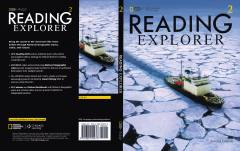

RENational Geographic maqolalari asosida ingliz tilida o'qish ko'nikmalarini oshiruvchi darslik.
National Geographic materiallari va qiziqarli mavzular yordamida o'quvchilarning ingliz tilida o'qish va tushunish ko'nikmalarini rivojlantiruvchi o'quv qo'llanma. Kitobda turli ilmiy-amaliy matnlar, matn bilan ishlash strategiyalari va vizual ko'nikmalarni oshiruvchi topshiriqlar mavjud.